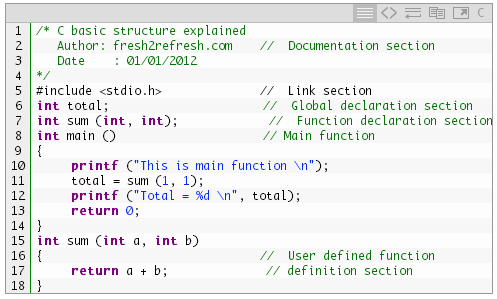

#include
int main(){
printf("Hello Rishi\n");
return 0;
}
Explation
The first line of the program #include is a preprocessor command, which tells a C
compiler to include stdio.h file before goingto actual compilation.
The next line int main() is the main function where the program execution begins.
The next line printf(...) is another function available in C which causes the message "Hello
,Rishi" to be displayed on the screen.
The next line return 0 terminates the main() function and returns the value 0.
Complete Structure of C Program-:

A C Program is Divide into following Parts:
The Documentation Section:Consists of a set of comment lines giving the name of the program and other details.
The Link Section:Provides instructions to the compiler to link functions from system library.
The Definition Section:Defines all symbolic constants.
The Global Declaration Section:There are some variables and those variables are declared in this section that is outside of all functions.
main() function:Every C Program must have one main function section. This section contains two parts , declaration and ececutable part. There should be at least one statement in the executable part which contains instructions to perform certain task. The declaration and executable part must appear between the opening and closing braces. All statements in the declaration part should end with the semicolon.
The Subprogram Section:contains all the user defined functions that are called in the amin function.